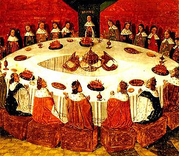

圆桌骑士

图：亚瑟王与所有骑士一起主持圆桌会议
圆桌骑士（英语：Knights of the Round Table），或译成圆桌武士，是中世纪大不列颠素材中亚瑟王朝廷内最高等的骑士，首先出现在诺曼诗人魏斯1155年所写的《不列颠传说》中。圆桌骑士的数量依版本而异，从12到150人不等，甚至更多。与有主次和对立关系的长条桌不同，圆桌代表与会者具有平等的权利。
在传说中，圆桌骑士听从亚瑟王的命令，以保卫王国和平为己任。15世纪的英国作家托马斯·马洛礼爵士将骑士条例描述为：
- 永不暴怒和谋杀
- 永不背叛
- 决不残忍，给予请求宽恕者以宽恕
- 总是给予女士以援助
- 永不胁迫女士
- 永不因为爱或言辞之利卷入争吵而战斗
圆桌骑士成员
圆桌骑士的数量依版本而异，有些骑士出现在文献中的时期较晚，有些根据版本的不同而并非圆桌骑士。其中出现的时期最古老的三名圆桌骑士是贝德维尔、高文和凯爵士。
- 亚格拉宾爵士（Sir Agravain），洛特王之子
- 阿格罗瓦尔爵士（Sir Aglovale），佩里诺尔王之子
- 巴格狄玛格斯（Bagdemagus）
- 贝德维尔爵士（Sir Bedivere）
- 布鲁诺爵士（Sir Breunor）
- 鲍斯爵士（Sir Borse），老鲍斯王（King Bors the Elder）之子，三位最终见证神的奇迹的骑士之一，并返回王国向亚瑟王秉告一切
- 卡铎尔爵士（Sir Cador）
- 卡拉道克（Caradoc Vreichvras）
- Sir Colgrevance
- 康斯坦丁三世 (不列颠)（Constantine III of Britain），卡铎尔爵士之子，他在亚瑟死后成为国王
- 达戈尼特爵士（Sir Dagonet），弄臣
- 丹尼尔，又称“开花谷的丹尼尔”
- 迪拿丹爵士（Sir Dinadan），老布鲁诺爵士（Sir Brunor the Senior）之子
- 艾克特爵士（Sir Ector），亚瑟的养父，凯爵士的亲生父亲，是第一个认可亚瑟王是国王的人
- 艾利安爵士（Sir Elyan the White），鲍斯爵士之子，白色艾利安
- 艾莱克爵士（Sir Erec）
- 加荷里斯爵士（Sir Gaheris），高文的弟弟，最后被兰斯洛特误杀
- 加拉哈德爵士（Sir Galahad），他的位置曾是危险之空座（Siege Perilous）
- 加勒赫特（Galehaut）
- 加雷斯爵士（Sir Gareth），高文的弟弟，俗称美掌公，最后被兰斯洛特误杀
- 高文爵士（Gawain, Gawaine, Walganus, Balbhuaidh, Gwalchmai）
- 杰兰特爵士（Sir Geraint）
- 高加兰爵士（Sir Gingalain），最初称为Le Bel Inconnu（"公平的未知"）爵士，高文爵士之子
- 格里弗雷特爵士（Sir Griflet）
- 海克托·德·马利斯爵士（Sir Hector de Maris），班王之子
- 霍尔王（King Hoel）
- 凯爵士（Sir Kay），亚瑟王的义兄
- 兰马洛克爵士（Sir Lamorak）
- 兰斯洛特爵士（Launcelot du Lac），圆桌骑士里武艺最好的骑士
- 李奥多格兰王（King Leondegrance），格妮薇儿（Guinevere）之父，被委托维持圆桌会议
- 莱昂内尔爵士（Sir Lionel）
- 路坎爵士（Sir Lucan）
- Sir Maleagant，拐走格妮薇儿的人
- 莫浩斯爵士（Sir Marhaus）
- 莫德雷德（Mordred），亚瑟的私生子、王国的破坏者
- 帕拉米迪斯爵士（Sir Palamedes）
- 佩利亚斯（Pelleas）
- 佩里诺尔王（King Pellinore）
- 珀西瓦里爵士（Sir Percival），三位最终见证神的奇迹的骑士之一
- Sir Safir，帕拉米迪斯爵士的兄弟
- 萨格拉墨爵士（Sir Sagramore）
- Sir Segwarides，帕拉米迪斯爵士的兄弟
- 托尔爵士（Sir Tor）
- 崔斯坦爵士（Tristan du Lac），多愁善感的骑士，圆桌骑士里武艺第二的骑士
- 尤里安王（King Urien）
- 欧文爵士（Sir Ywain／Owain），尤里安王之子
- 私生子欧文爵士（Sir Ywain the Bastard），尤里安王的私生子，意外被高文杀死
返回首页
下一页(卡美洛)